건설재료시험기사 (2019-09-21 기출문제)
1과목: 콘크리트공학
1. 콘크리트 양생 중 적절한 수분공급을 하지 않아 수분의 증발이 원인이 되어 타설 후부터 콘크리트의 응결, 종결 시까지 발생할 수 있는 결함으로 가장 적당한 것은?
- 초기 건조균열이 발생한다.
- 콘크리트의 부등침하에 의한 침하수축 균열이 발생한다.
- 시멘트, 골재입자 등이 침하수축 균열이 발생한다.
- 블리딩에 의하여 콘크리트 표면에 미세한 물질이 떠올라 이음부 약점이 된다.
(정답률: 85%)

2. 콘크리트의 타설에 대한 설명으로 틀린 것은?
- 한 구획 내의 콘크리트의 타설이 완료될 때까지 연속해서 타설하여야 한다.
- 타설한 콘크리트를 거푸집 안에서 횡방향으로 이동시켜서는 안 된다.
- 외기온도가 25℃이하일 경우 허용 이어치기 시간간격은 2.5시간을 표준으로 한다.
- 콘크리트를 2층 이상으로 나누어 타설할 경우, 상층의 콘크리트 타설은 원칙적으로 하층의 콘크리트가 굳은 뒤에 타설하여야 한다.
(정답률: 78%)
3. 고유동 콘크리트를 제조할 때에는 유동성, 재료 불리저항성 및 자기 충전성을 관리하여야 한다. 이때 유동성을 관리하기 위해 필요한 시험은?
- 깔때기 유하시간
- 슬럼프 플로시험
- 500mm 플로 도달시간
- 충전장치를 이용한 간극 통과성 시험
(정답률: 80%)
4. 일반콘크리트 제조 시 목표하는 시멘트의 1회 계향 분량은 317kg이다. 그러나 현장에서 계량된 시멘트의 계측 값은 313kg으로 나타났다. 이러한 경우의 계량오차와 합격ㆍ불합격 여부를 정확히 판단한 것은?
- 계량오차 :-0.63%, 합격
- 계량오차 :-0.63%, 불합격
- 계량오차 :-1.26%, 합격
- 계량오차 :-1.26%, 불합격
(정답률: 76%)
5. 섭유보강 콘크리트에 대한 설명으로 틀린 것은?
- 섬유보강 콘크리트는 콘크리트의 인장강도와 균열에 대한 저항성을 높인 콘크리트이다.
- 믹서는 섬유를 콘크리트 속에 균일하게 분산시킬 수 있는 가경식 믹서를 사용하는 것은 원칙으로 한다.
- 섬유보강 콘크리트에 사용하는 섬유는 섬유와 시멘트 결합재 사이의 부착성이 양호하고, 섬유의 인장강도가 커야 한다.
- 시멘트계 복합재료용 섬유는 강섬유, 유리섬유, 탄소섬유 등의 무기계 섬유와 아라미드섬유, 비닐론섬유 등의 유기계 섬유로 분류한다.
(정답률: 79%)
6. 시방배합에서 규정된 배합의 표시 방법에 포함되지 않는 것은?
- 잔골재율
- 물-결합재비
- 슬럼프 범위
- 잔골재의 최대치수
(정답률: 66%)
7. 프리스트레스트 콘크리트에서 프리스트레싱할 때의 일반적인 사항으로 틀린 것은?
- 긴장재는 이것은 구성하는 각각 PS강재에 소정의 인장력이 주어지도록 긴장하여야 한다.
- 긴장재를 긴장할 때 정확한 인장력이 주어지도록 하기 위해 인장력을 설계값 이상으로 주었다가 다시 설계값으로 낮추는 방법으로 시공하여야 한다.
- 긴장재에 대해 순차적으로 프리스트레싱을 실시할 경우는 각 단계에 있어서 콘크리트에 유해한 응력이 생기지 않도록 하여야 한다.
- 프리텐션 방식의 경우 긴장재에 주는 인장력은 고정장치의 활동에 의한 손실을 고려하여야 한다.
(정답률: 82%)
8. 거푸집의 높이가 높을 경우, 거푸집에 투입구를 설치하거나 연직슈트 또는 펌프 배관의 배출구를 타설면 가까운 곳까지 내려서 콘크리트를 타설하여야 한다. 이때 슈트, 펌프배관 등의 배출구와 타설면까지의 높이는 몇m이하를 원칙으로 하는가?
- 1.0m
- 1.5m
- 1.0m
- 2.5m
(정답률: 86%)
9. 30회 이상의 시험실적으로부터 구한 콘크리트 압축강도의 표준편차가 2.5MPa이고, 콘크리트의 설계기준압축강도가 30MPa일 때 콘크리트 배합강도는?
- 32.33MPa
- 33.35MPa
- 34.25MPa
- 35.33MPa
(정답률: 63%)
10. 한중 콘크리트에 대한 설명으로 틀린 것은?
- 하루의 평균기온이 4℃ 이하로 예상될 때에 시공하는 콘크리트이다.
- 단위수량은 소요의 워커빌리티를 유지할 수 있는 범의 내에서 되도록 적게 정하여야 한다.
- 한중 콘크리트는 소요의 압축강도가 얻어질 때까지는 콘크리트의 온도를 5℃ 이상으로 유지해야 한다.
- 물, 시멘트 및 골재를 가열하여 재료의 온도를 높일 경우에는 균일하게 가열하여 항상 소요온도의 재료가 얻어질 수 있도록 해야 한다.
(정답률: 66%)
11. 쪼갬 인장 강도 시험(KS F 2423)으로부터 최데 하중 P=100KN을 얻었다. 원주 공시체의 지름이 100mm, 길이가 200mm일 때 이 공시체의 쪼갬 인장 강도는?
- 1.27MPa
- 1.59MPa
- 3.18MPa
- 6.36MPa
(정답률: 71%)
12. 매스콘크리트의 온도균열 발생에 대한 검토는 온도균열지수에 의해 평가하는 것을 원칙으로 한다. 철근이 배치된 일반적인 구조물의 표준적인 온도균열지수의 값 중 균열발생을 제한할 경우의 값으로 옳은 것은? (단, 표준시방서에 따른다.)
- 1.5 이상
- 1.2~1.5
- 0.7~1.2
- 0.7 이하
(정답률: 57%)
13. 구조체 콘크리트의 압축강도 비파괴 시험 사용되는 슈미트 해머로 구조체가 경량 콘크리트인 경우에 사용하는 슈미트 해머는?
- N형 슈미트 해머
- L형 슈미트 해머
- P형 슈미트 해머
- M형 슈미트 해머
(정답률: 80%)
14. 프리스트레스트 콘크리트와 철근콘크리트의 비교 설명으로 틀린 것은?
- 프리스트레스트 콘크리트는 철근콘크리트에 비하여 내화성에 있어서는 불리하다.
- 프리스트레스트 콘크리트는 철근콘크리트에 비하여 강성이 커서 변형이 적고 진동이 강하다.
- 프리스트레스트 콘크리트는 철근콘크리트에 비하여 고강도의 콘크리트와 강재를 사용하게 된다.
- 프리스트레스트 콘크리트는 균열이 발생하지 않도록 설계되기 때문에 내구성 및 수밀성이 좋다.
(정답률: 71%)
15. 굵은 골재의 최대치수에 대한 설명으로 옳은 것은?
- 단면이 큰 구조물인 경우 25mm를 표준으로 한다.
- 거푸집 양 측면 사이의 최소 거리의 3/4을 초과하지 않아야 한다.
- 개별 철근, 다발철근, 긴장재 또는 덕트사이 최소 순간격의 3/4을 초과하지 않아야 한다.
- 무근 콘크리트인 경우 20mm를 표준으로 하며, 또한 부재 최소 치수의 1/5을 초과해서는 안 된다.
(정답률: 54%)
16. 설계기준압축강도가 21MPa인 콘크리트로부터 5개의 공시체를 만들어 압축강도 시험을 한 결과 압축강도가 아래의 표와 같을 때, 품질관리를 위한 압축강도의 변동계수 값은 약 얼마인가? (단, 표준편차는 불편분산의 개념으로 구한다.)
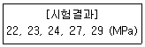
- 11.7%
- 13.6%
- 15.2%
- 17.4%
(정답률: 51%)
17. 기존 구조물의 철근부식을 평가할 수 있는 비파괴 시험방법이 아닌 것은?
- 자연전위법
- 분극저항법
- 전기저항법
- 관입저항법
(정답률: 67%)
18. 콘크리트 공시체의 압축강도에 관한 설명으로 옳은 것은?
- 하중재하속도가 빠를수록 강도가 작게 나타난다.
- 시험 진적에 공시체를 건조시키면 강도가 크게 감소한다.
- 공시체의 표면에 요철이 있는 경우는 압축강도가 크게 나타난다.
- 원주형 공시체의 직격과 입방체 공시체의 한 변의 길이가 같으면 원주형 공시체의 강도가 작다.
(정답률: 64%)
19. 콘크리트 압축강도 시험용 공시체를 제작하는 방법에 대한 설명으로 틀린 것은?
- 공시체는 지름은 2배의 높이를 가진 원기둥형으로 한다.
- 콘크리트를 몰드에 채울 때 2층 이상으로 거의 동일한 두께로 나눠서 채운다.
- 콘크리트를 몰드에 채울 때 각 층의 두께는 100mm를 초과해서는 안 된다.
- 몰드를 떼는 시기는 콘크리트 채우기가 끝나고 나서 16시간 이상 3일 이내로 한다.
(정답률: 60%)
20. 일반적인 수중 콘크리트의 재료 및 시공 상의 주의사항으로 옳은 것은?
- 물의 흐름을 막은 정수 중에는 콘크리트를 수중에 낙하시킬 수 있다.
- 물-결합재비는 40% 이하, 단위 결합 재량은 300kg/m3 이상을 표준으로 한다.
- 수중에서 시공할 때의 강도가 표준공시체 강도의 0.6~0.8배가 되도록 배합강도를 설정하여야 한다.
- 트레미를 사용하여 콘크리트를 타설할 경우, 콘크리트를 타설하는 동안 일정한 속도로 수평 이동시켜야 한다.
(정답률: 61%)
2과목: 건설시공 및 관리
21. 옹벽을 구조적 특성에 따라 분류할 때 여기에 속하지 않는 것은?
- 돌쌓기 옹벽
- 중력식 옹벽
- 부벽식 옹벽
- 캔틸레버식 옹벽
(정답률: 55%)
22. 방파제를 크게 보통방파제와 특수방파제로 분류할 때 특수방파제에 속하지 않는 것은?
- 공기 방파제
- 부양 방파제
- 잠수 방파제
- 콘크리트 단괴식 방파제
(정답률: 68%)
23. 다져진 토량 37800m3을 성토하는데 흐트러진 토량(운반토량)으로 30000m3이 있을 때, 부족 토량은 자연 상태 토량으로 얼마인가? (단 토량변화율 L=1.25, C=0.9이다.)
- 22000m3
- 18000m3
- 15000m3
- 11000m3
(정답률: 66%)
24. 운동장, 광장 등 넓은 지역의 배수방법으로 적당한 것은?
- 암거 배수
- 지표 배수
- 개수로 배수
- 맹암거 배수
(정답률: 74%)
25. 히빙(Heaving)의 방지대책으로 틀린 것은?
- 굴착저면의 지반개량을 실시한다.
- 흙막이벽의 근입 깊이를 증대시킨다.
- 굴착공법을 부분굴착에서 전면굴착으로 변경한다.
- 중력배수나 강제배수 같은 지하수의 배수대책을 수립한다.
(정답률: 68%)
26. 아래 그림과 같은 지형에서 시공기준면의 표고를 30m로 할 때 총 토공량은? (단, 격자점의 숫자는 표고를 나타내며 단위는 m이다.)
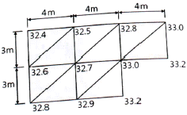
- 142m3
- 168m3
- 184m3
- 213m3
(정답률: 54%)
27. 아스팔트 포장에서 프라임코트(Prime coat)의 중요 목적이 아닌 것은?
- 배수층 역할을 하여 노상토의 지지력을 증대시킨다.
- 보조기층에서 모세관 작용에 의한 물의 상승을 차단한다.
- 보조기층과 그 위에 시공될 아스팔트 혼합물과 융합을 좋게 한다.
- 기층 마무리 후 아스팔트 포설까지의 기층과 보조기층의 파손 및 표면수의 침투, 강우에 의한 세굴을 방지한다.
(정답률: 47%)
28. 20000m3의 본바닥을 버킷용량 0.6m3의 백호를 이용하여 굴착할 때 아래 조건에 의한 공기를 구하면?(오류 신고가 접수된 문제입니다. 반드시 정답과 해설을 확인하시기 바랍니다.)
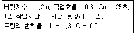
- 24일
- 42일
- 186일
- 314일
(정답률: 56%)
29. 공정관리에서 PERT와 CPM의 비교 설명으로 옳은 것은?
- PERT는 반복사업에 CPM은 신규사업에 좋다.
- PERT는 1점 시간추정이고, CPM은 3점 시간추정이다.
- PERT는 작업활동 중심관리이고, CPM은 작업단계 중심관리이다.
- PERT는 공기 단축이 주목적이고, CPM은 공사비 절감이 주목적이다.
(정답률: 65%)
30. 부마찰력에 대한 설명으로 틀린 것은?
- 말뚝이 타입된 지반이 압밀 진행 중일 때 발생된다.
- 지하수위의 감소로 체적이 감소할 때 발생된다.
- 말뚝의 주변마착력이 선단지지력보다 클 때 발생된다.
- 상재 하중이 말뚝과 지표에 작용하여 침하할 경우에 발생된다.
(정답률: 56%)
31. 터널의 시공에 사용되는 숏크리트 습식공법의 장점으로 틀린 것은?
- 분진이 적다.
- 품질관리가 용이하다.
- 장거리 압송이 가능하다.
- 대규모 터널 작업에 적합하다.
(정답률: 68%)
32. 시료의 평균값이 279.1, 범위의 평균값이 56.32. 군의 크기에 따라 정하는 계수가 0.73일 때 상부관리 한계선(UCL)값은?
- 316.0
- 320.2
- 338.0
- 342.1
(정답률: 38%)
33. 아스팔트 포장과 콘크리트 포장을 비교설명한 것 중 아스팔트 포장의 특징으로 틀린 것은?
- 초기 공사비가 고가이다.
- 양생기간이 거의 필요 없다.
- 주행성이 콘크리트 포장보다 좋다.
- 보수 작업이 콘크리트 포장보다 쉽다.
(정답률: 67%)
34. 건설기계 규격의 일반적인 표현방법으로 옳은 것은?
- 불도저-총 중량(ton)
- 모터 스크레이퍼-중량(ton)
- 트랙터 셔블-버킷 면적(m2)
- 모터 그레이더-최대 견인력(ton)
(정답률: 61%)
35. 교량 가설의 위치 선정에 대한 설명으로 틀린 것은?
- 하천과 유수가 안정한 곳일 것
- 하폭이 넓을 때는 굴곡부일 것
- 하천과 양안의 지질이 양호한 곳일 것
- 교각의 축방향이 유수의 방향과 평행하게 되는 곳일 것
(정답률: 69%)
36. 다음 중 직접기초 굴착 시 저면 중앙부에 섬과 같이 기초부를 먼저 구축하여 이것을 발판으로 주면부를 시공하는 방법은?
- Cut 공법
- Island 공법
- Open cut 공법
- Deep well 공법
(정답률: 74%)
37. 기계화 시공에 있어서 중장비의 비용계산 중 기계손료를 구성하는 요소가 아닌 것은?
- 관리비
- 정비비
- 인건비
- 감가상각비
(정답률: 68%)
38. 돌쌓기에 대한 설명으로 틀린 것은?
- 메쌓기는 콘크리트를 사용하지 않는다.
- 찰쌓기는 뒤채움에 콘크리트를 사용한다.
- 메쌓기는 쌓는 높이의 제한을 받지 않는다.
- 일반적으로 찰쌓기는 메쌓기보다 높이 쌓을 수 있다.
(정답률: 62%)
39. 록 볼트의 정착형식은 선단 정착형, 전면 접착형, 혼합형으로 구분할 수 있다. 이에 대한 설명으로 틀린 것은?
- 록 볼트 전장에서 원지반을 구속하는 경우에는 전면 접착형이다.
- 암괴의 봉합효과를 목적으로 하는 것은 선단 정착형이며, 그 중 쐐기형이 많이 쓰인다.
- 선단을 기계적으로 정학한 후 시멘트 밀크를 주입하는 것은 혼합형이다.
- 경암, 보통암, 토사 원지반에서 팽창성 원지반까지 적용범위가 넓은 것은 전면 접착형이다.
(정답률: 47%)
40. 토목공사용 기계는 작업종류에 따라 굴삭, 운반, 부설, 다짐 및 정지 등으로 구분된다. 다음 중 운반용 기계가 아닌 것은?
- 탬퍼
- 불도저
- 덤프트럭
- 벨트 컨베이어
(정답률: 64%)
3과목: 건설재료 및 시험
41. 플라이 애시에 대한 설명으로 틀린 것은?
- 초기의 수화반응의 증대로 초기강도가 크다.
- 사용수량을 감소시키며 유동성을 개선한다.
- 알칼리-골재 반응에 의한 팽창을 억제한다.
- 화력발전소의 보일러에서 나오는 산업폐기물이다.
(정답률: 56%)
42. 직경 200mm, 길이 5m의 강봉에 축방향으로 400kN의 인장력을 가하여 변형을 측정한 결과 직경이 0.1mm 줄어들고 길이가 10mm 늘어났을 때 이 재료의 푸아송 비는?
- 0.25
- 0.5
- 1.0
- 4.0
(정답률: 50%)
43. 시멘트의 응결시험 방법으로 옳은 것은?
- 비비 시험
- 오토클레이브 방법
- 길모어 침에 의한 방법
- 공기 투과 장치에 의한 방법
(정답률: 71%)
44. 어떤 시멘트의 주요 성분이 아래 표와 같을 때 이 시멘트의 수경률은?
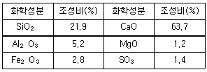
- 2.0
- 2.⑤
- 2.10
- 2.15
(정답률: 38%)
45. 다음 콘크리트용 골재에 대한 설명으로 틀린 것은?
- 골재의 비중이 클수록 흡수량이 작아 내구적이다.
- 조립률이 같은 골재라도 서로 다른 입도곡선을 가질 수 있다.
- 콘크리트의 압축강도는 물-시멘트비가 동일한 경우 굵은 골재 최대치수가 커짐에 따라 증가한다.
- 굵은 골재 최대치수를 크게 하면 같은 슬럼프의 콘크리트를 제조하는데 필요한 단위수량을 감소시킬 수 있다.
(정답률: 46%)
46. 골재의 표준체에 의한 체가름시험에서 굵은 골재란 다음 중 어느 것인가?
- 100mm체를 전부 통과하고 5mm체를 거의 통과하며 0.15mm체에 거의 남는 골재
- 100mm체를 전부 통과하고 5mm체를 거의 통과하며 1.2mm체에 거의 남는 골재
- 40mm체에 거의 남는 골재
- 5mm체에 거의 남는 골재
(정답률: 66%)
47. 아래의 표에서 설명하는 것은?
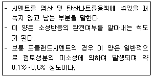
- 수경률
- 규산율
- 강열감량
- 불용해 잔분
(정답률: 64%)
48. 어떤 목재의 함수율을 시험한 결과 건조 전 목재의 중량은 165g이고, 비중이 1.5일 때 함수율은 얼마인가? (단, 목재의 절대 건조중량은 142g이었다.)
- 13.9%
- 15.2%
- 16.2%
- 17.2%
(정답률: 50%)
49. 다음 골재의 함수상태를 표시한 것 중 틀린 것은?
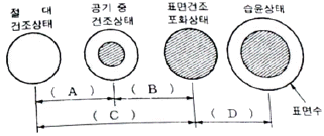
- A : 기건 함수량
- B : 유효흡수량
- C : 함수량
- D : 표면수량
(정답률: 67%)
50. 일반적으로 포장용 타르로 가장 많이 사용되는 것은?
- 피치
- 잔류타르
- 컷백타르
- 혼성타프
(정답률: 55%)
51. 재료의 일반적 성질 중 아래 표에 해당하는 성질은 무엇인가?
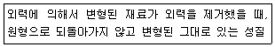
- 인성
- 취성
- 탄성
- 소성
(정답률: 69%)
52. 콘크리트용 골재에 요구되는 성질 중 옳지 않은 것은?
- 화학적으로 안정할 것
- 골재의 입도 크기가 동일할 것
- 물리적으로 안정하고 내구성이 클 것
- 시멘트 풀과의 부착력이 큰 표면조직을 가질 것
(정답률: 70%)
53. 다음 중 기폭약의 종류가 아닌 것은?
- 니트로글리세린
- 뇌산수은
- 질화납
- DDNP
(정답률: 45%)
54. 토목섬유 중 지오텍스타일의 기능을 설명한 것으로 틀린 것은?
- 배수:물이 흙으로부터 여러 형태의 배수로로 빠져나갈 수 있도록 한다.
- 보강:토목섬유의 인장강도는 흙의 지력을 증가시킨다.
- 여과:입도가 다른 두 개의 층 사이에 배치되어 침투수 통과 시 토립자의 이동을 방지한다.
- 혼합:도로 시공 시 여러 개의 흙층을 혼합하여 결합시키는 역할을 한다.
(정답률: 53%)
55. 다음 중 천연아스팔트의 종류가 아닌 것은?
- 록(Rock)아스팔트
- 샌드(Sand)아스팔트
- 블론(Blown)아스팔트
- 레이크(Lake)아스팔트
(정답률: 68%)
56. 콘크리트용 혼화재료에 대한 설명으로 틀린 것은?
- 팽창재를 사용한 콘크리트의 수밀성은 일반적으로 작아지는 경향이 있다.
- 촉진제는 저온에서 강도발현이 우수하기 때문에 한중콘크리트에 사용된다.
- 발포제에 사용한 콘크리트는 내부 기포에 의해 단열성 및 내화성이 떨어진다.
- 착색재로 사용되는 안료를 혼합한 콘크리트는 보통콘크리트에 비해 강도가 저하된다.
(정답률: 47%)
57. 다음 석재 중에서 압축강도가 가장 큰 것은?
- 사암
- 응회암
- 안산암
- 화강암
(정답률: 64%)
58. 반 고체 상태의 아스팔트성 재료를 3.2mm 두께의 얇은 막 형태로 163℃로 5시간 가열한 후 침입한 후 침입도 시험을 실시하여 원 시료와의 비율을 측정하며, 가열 손실량도 측정하는 시험법은?
- 증발감량 시험
- 피박박리 시험
- 박막가열 시험
- 아스팔트 제품의 증류시험
(정답률: 62%)
59. AE콘크리트의 AE제의 대한 특징으로 틀린 것은?
- AE제는 미소한 독립기포를 콘크리트 중에 균일하게 분포시킨다.
- AE 공기압의 지름은 대부분 0.025~0.25mm 정도이다.
- AE제는 동결 융해에 대한 저항성을 감소시킨다.
- AE제는 표면 활성제이다.
(정답률: 60%)
60. 다음 암석 중 일반적으로 공극률이 가장 큰 것은?
- 사암
- 화강암
- 응회암
- 대리석
(정답률: 54%)
4과목: 토질 및 기초
61. 지중응력을 구하는 공식 중 Newmark의 영향원법을 사용했을 때 재해면적 내의 영향원 요소 수가 20개, 등분포하중이 100kN/m2인 경우 연직응력증가량(△σz)은? (단, 영향계수는 0.0⑤이다.)
- 1kN/m2
- 10kN/m2
- 50kN/m2
- 100kN/m2
(정답률: 45%)
62. 말뚝이 20개인 군항기초의 효율이 0.80이고, 단항으로 계산된 말뚝 1개의 허용지지력이 200kN일 때, 이 군항의 허용지지력은?
- 1600kN
- 2000kN
- 3200kN
- 4000kN
(정답률: 52%)
63. 간극비가 0.80이고, 토립자의 비중이 2.70인 지반에 허용되는 최대 동수경사는 약 얼마인가? (단, 지반의 분사현상에 대한 안전율은 3이다.)
- 0.11
- 0.31
- 0.61
- 0.91
(정답률: 39%)
64. 액성한계가 60%인 점토의 흐트러지지 않은 시료에 대하여 압축지수를 Skempton(1994)의 방법에 의하여 구한 값은?
- 0.16
- 0.28
- 0.35
- 0.45
(정답률: 35%)
65. 흙의 전단강도에 대한 설명으로 틀린 것은? (단, cu:점착력, qu:일축압축강도, ø:내부마착각이다.)
- 예민비가 큰 흙을 Quick clay라고 한다.
- 흙 댐에 있어서 수위급강하 때의 안정문제는 c'및 ø‘를 사용해야 한다.
- 일축압축강도시험으로부터 구한 점착혁 cu는
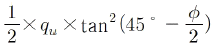
이다. - Mohr-coulomb의 파괴기준에 의하면 포화점토의 비압밀 비배수 상태의 내부마찰각은 0이다.
(정답률: 47%)
66. 상하류의 수위 차 h=10m, 투수계수 K=1×10-5cm/s, 투수층 유로의 수 Nf=3, 등수두면 수 Nd=9인 흙 댐의 단위 m당 1일 침투수량은?
- 0.0864m3/day
- 0.864m3/day
- 0.288m3/day
- 0.0288m3/day
(정답률: 36%)
67. 어떤 점토지반에서 베인 시험을 실시하였다. 베인의 지름이 50mm, 높이가 100mm, 파괴 시 토크가 59Nㆍm일 때 이 점토의 점착력은?
- 129kN/m2
- 157kN/m2
- 213kN/m2
- 276kN/m2
(정답률: 32%)
68. Rankine 토압이론의 가정 사항으로 틀린 것은?
- 지표면은 무한히 넓게 존재한다.
- 흙은 비압축성의 균질한 재료이다.
- 토압은 지표면에 평행하게 작용한다.
- 흙은 입자 간의 점착력에 의해 평형을 유지한다.
(정답률: 39%)
69. 다음 표는 흙의 다짐에 대해 설명한 것이다. 옳게 설명한 것을 모두 고른 것은?
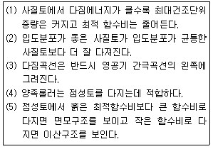
- (1), (2), (3), (4)
- (1), (2), (3), (5
- (1), (4, (5)
- (2, (4, (5)
(정답률: 56%)
70. 그림은 확대 기초를 설치했을 때 지반의 전단 파괴형상을 가정(Terzaghi의 가정)한 것이다. 다음 설명 중 틀린 것은? (단, ø은 내부마찰각이다.)
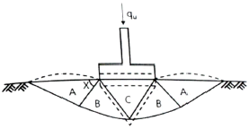
- 파괴 순서는 C→B→A이다.
- 전반전단(General Shear)일 때의 파괴형상이다.
- A영역에서 각 X는 수평선과
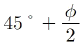
의 각을 이룬다. - C영역은 탄성영역이며, A영역은 수동영역이다.
(정답률: 55%)
71. 현장 도로 토공에서 모래치환법에 의한 흙이 밀도 시험을 하였다. 파낸 구멍의 체적이 1960cm3, 흙의 질량이 3390g이고, 이 흙의 함수비는 10%이었다. 실험실에서 구한 최대 건조 밀도가 1.65g/cm3일 때 다짐도는?
- 85.6%
- 91.0%
- 95.2%
- 98.7%
(정답률: 51%)
72. 그림과 같은 점성토 지반의 토질시험 결과 내부마찰각 ø=30°, 점참력 c=15kN/m2일 때 A점의 전단강도는? (단, 물의 단위중량은 9.81kN/m3이다.)
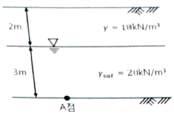
- 44.61kN/m2
- 53.43kN/m2
- 68.69kN/m2
- 70.41kN/m2
(정답률: 41%)
73. 4m×4m 크기인 정사각형 기초를 내부마찰각 ø=20°, 점착력 c=30kN/m2인 지반에 설치하였다. 흙의 단위중량(γ)=19kN/m3이고 안전율(FS)을 3으로 할 때 Terzaghi 지지력 공식으로 기초의 허용하중을 구하면? (단, 기초의 근입깊이는 1m이고, 전반전단파괴가 발생한다고 가정하며, Nc=17.69, Nq=7.44, Nγ=4.97이다.)
- 4780kN
- 5239kN
- 5672kN
- 6218kN
(정답률: 38%)
74. 어떤 흙의 자연함수비가 액성한계보다 많으면 그 흙의 상태로 옳은 것은?
- 고체 상태에 있다.
- 반고체 상태에 있다.
- 소성 상태에 있다.
- 액체 상태에 있다.
(정답률: 55%)
75. 연약지반 개량공법 중에서 점성토지반에 쓰이는 공법은?
- 전기충격공법
- 폭파다짐공법
- 생석회 말뚝공법
- 바이브로 플로테이션 공법
(정답률: 56%)
76. 흙의 전단시험에서 배수조건이 아닌 것은?
- 비압밀 비배수
- 압밀 비배수
- 비압밀 배수
- 압밀 배수
(정답률: 41%)
77. 사면파괴가 일어날 수 있는 원인으로 옳지 않은 것은?
- 흙 중의 수분의 증가
- 과잉간극수압의 감소
- 굴착에 따른 구속력의 감소
- 지진에 의한 수평방향력의 증가
(정답률: 48%)
78. 다음은 시험 종류와 시험으로부터 얻을 수 있는 값을 연결한 것이다. 연결이 틀린 것은?
- 비중계분석시험-흙의 비중(Gs)
- 삼축압축시험-강도정수(c, ø)
- 일축압축시험-흙의 예민비(St)
- 평판새하시험-지반반력계수(ks)
(정답률: 49%)
79. 함수비가 20%인 어떤 흙 1200g과 함수비가 30%인 어떤 흙 2600g을 섞으면 그 흙의 함수비는 약 얼마인가?
- 21.1%
- 25.0%
- 26.7%
- 29.5%
(정답률: 50%)
80. 유선망은 이론상 정사각형으로 이루어진다. 동수경사가 가장 큰 곳은?
- 어느 곳이나 동일함
- 땅속 제일 깊은 곳
- 정사각형이 가장 큰 곳
- 정사각형이 가장 작은 곳
(정답률: 56%)